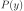
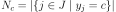

1.9. Naive Bayes¶
Naive Bayes methods are a set of supervised learning algorithms based on applying Bayes’ theorem with the “naive” assumption of conditional independence between every pair of features given the value of the class variable. Bayes’ theorem states the following relationship, given class variable and dependent feature vector through , :
Using the naive conditional independence assumption that
for all  , this relationship is simplified to
, this relationship is simplified to
Since is constant given the input, we can use the following classification rule:
and we can use Maximum A Posteriori (MAP) estimation to estimate  and ; the former is then the relative frequency of class in the training set.
The different naive Bayes classifiers differ mainly by the assumptions they make regarding the distribution of .
In spite of their apparently over-simplified assumptions, naive Bayes classifiers have worked quite well in many real-world situations, famously document classification and spam filtering. They require a small amount of training data to estimate the necessary parameters. (For theoretical reasons why naive Bayes works well, and on which types of data it does, see the references below.)
Naive Bayes learners and classifiers can be extremely fast compared to more sophisticated methods. The decoupling of the class conditional feature distributions means that each distribution can be independently estimated as a one dimensional distribution. This in turn helps to alleviate problems stemming from the curse of dimensionality.
On the flip side, although naive Bayes is known as a decent classifier,
it is known to be a bad estimator, so the probability outputs from
predict_proba are not to be taken too seriously.
References:
H. Zhang (2004). The optimality of Naive Bayes. Proc. FLAIRS.
1.9.1. Gaussian Naive Bayes¶
GaussianNB implements the Gaussian Naive Bayes algorithm for
classification. The likelihood of the features is assumed to be Gaussian:
The parameters and are estimated using maximum likelihood.
>>> from sklearn.datasets import load_iris
>>> from sklearn.model_selection import train_test_split
>>> from sklearn.naive_bayes import GaussianNB
>>> X, y = load_iris(return_X_y=True)
>>> X_train, X_test, y_train, y_test = train_test_split(X, y, test_size=0.5, random_state=0)
>>> gnb = GaussianNB()
>>> y_pred = gnb.fit(X_train, y_train).predict(X_test)
>>> print("Number of mislabeled points out of a total %d points : %d"
... % (X_test.shape[0], (y_test != y_pred).sum()))
Number of mislabeled points out of a total 75 points : 4
1.9.2. Multinomial Naive Bayes¶
MultinomialNB implements the naive Bayes algorithm for multinomially
distributed data, and is one of the two classic naive Bayes variants used in
text classification (where the data are typically represented as word vector
counts, although tf-idf vectors are also known to work well in practice).
The distribution is parametrized by vectors
for each class , where  is the number of features
(in text classification, the size of the vocabulary)
and is the probability
of feature appearing in a sample belonging to class .
is the number of features
(in text classification, the size of the vocabulary)
and is the probability
of feature appearing in a sample belonging to class .
The parameters is estimated by a smoothed version of maximum likelihood, i.e. relative frequency counting:
where  is
the number of times feature appears in a sample of class
in the training set ,
and is the total count of
all features for class .
is
the number of times feature appears in a sample of class
in the training set ,
and is the total count of
all features for class .
The smoothing priors accounts for features not present in the learning samples and prevents zero probabilities in further computations. Setting is called Laplace smoothing, while is called Lidstone smoothing.
1.9.3. Complement Naive Bayes¶
ComplementNB implements the complement naive Bayes (CNB) algorithm.
CNB is an adaptation of the standard multinomial naive Bayes (MNB) algorithm
that is particularly suited for imbalanced data sets. Specifically, CNB uses
statistics from the complement of each class to compute the model’s weights.
The inventors of CNB show empirically that the parameter estimates for CNB are
more stable than those for MNB. Further, CNB regularly outperforms MNB (often
by a considerable margin) on text classification tasks. The procedure for
calculating the weights is as follows:
where the summations are over all documents not in class ,
is either the count or tf-idf value of term in document
, is a smoothing hyperparameter like that found in
MNB, and . The second normalization addresses
the tendency for longer documents to dominate parameter estimates in MNB. The
classification rule is:
i.e., a document is assigned to the class that is the poorest complement match.
References:
Rennie, J. D., Shih, L., Teevan, J., & Karger, D. R. (2003). Tackling the poor assumptions of naive bayes text classifiers. In ICML (Vol. 3, pp. 616-623).
1.9.4. Bernoulli Naive Bayes¶
BernoulliNB implements the naive Bayes training and classification
algorithms for data that is distributed according to multivariate Bernoulli
distributions; i.e., there may be multiple features but each one is assumed
to be a binary-valued (Bernoulli, boolean) variable.
Therefore, this class requires samples to be represented as binary-valued
feature vectors; if handed any other kind of data, a BernoulliNB instance
may binarize its input (depending on the binarize parameter).
The decision rule for Bernoulli naive Bayes is based on
which differs from multinomial NB’s rule
in that it explicitly penalizes the non-occurrence of a feature
that is an indicator for class ,
where the multinomial variant would simply ignore a non-occurring feature.
In the case of text classification, word occurrence vectors (rather than word
count vectors) may be used to train and use this classifier. BernoulliNB
might perform better on some datasets, especially those with shorter documents.
It is advisable to evaluate both models, if time permits.
References:
C.D. Manning, P. Raghavan and H. Schütze (2008). Introduction to Information Retrieval. Cambridge University Press, pp. 234-265.
A. McCallum and K. Nigam (1998). A comparison of event models for Naive Bayes text classification. Proc. AAAI/ICML-98 Workshop on Learning for Text Categorization, pp. 41-48.
V. Metsis, I. Androutsopoulos and G. Paliouras (2006). Spam filtering with Naive Bayes – Which Naive Bayes? 3rd Conf. on Email and Anti-Spam (CEAS).
1.9.5. Categorical Naive Bayes¶
CategoricalNB implements the categorical naive Bayes
algorithm for categorically distributed data. It assumes that each feature,
which is described by the index , has its own categorical
distribution.
For each feature in the training set ,
CategoricalNB estimates a categorical distribution for each feature i
of X conditioned on the class y. The index set of the samples is defined as
, with  as the number of samples.
as the number of samples.
The probability of category in feature given class
is estimated as:
where is the number
of times category appears in the samples , which belong
to class ,  is the number
of samples with class c, is a smoothing parameter and
is the number of available categories of feature .
CategoricalNB assumes that the sample matrix is encoded
(for instance with the help of OrdinalEncoder) such that all
categories for each feature are represented with numbers
where is the number of available categories
of feature .
1.9.6. Out-of-core naive Bayes model fitting¶
Naive Bayes models can be used to tackle large scale classification problems
for which the full training set might not fit in memory. To handle this case,
MultinomialNB, BernoulliNB, and GaussianNB
expose a partial_fit method that can be used
incrementally as done with other classifiers as demonstrated in
Out-of-core classification of text documents. All naive Bayes
classifiers support sample weighting.
Contrary to the fit method, the first call to partial_fit needs to be
passed the list of all the expected class labels.
For an overview of available strategies in scikit-learn, see also the out-of-core learning documentation.
Note
The partial_fit method call of naive Bayes models introduces some
computational overhead. It is recommended to use data chunk sizes that are as
large as possible, that is as the available RAM allows.